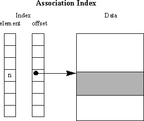
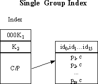
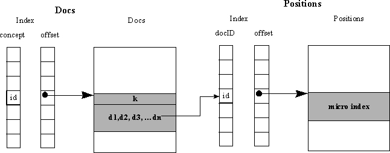
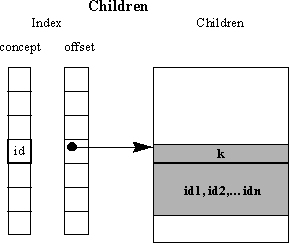

Various data structures within the search database files contain a sequence of integers. To decrease the overall size of the files a compression algorithm takes a sequence of integers and produces a small number (k) and a sequence of bytes. Given k the byte sequence can be decoded to produce the original integer sequence.
The compressed algorithm as follows:
TO BE SUPPLIED
Association indexes are a pair of parallel tables: the first table contains elements; the second table contains offsets of data in an associated file. The Positions Index, Documents Index, and Childrens Index files are auxiliary microindex files.

Externally the files are stored in a compressed form. They use the data structure described below where the first byte is a compression factor for the compressed list encoded in following series of bytes. The number of bytes is a function of the compression factor, and contents of the list. This is followed by a second pair of compression factor and bytes for the offset list.The data structure of an auxiliary microindex file is as follows:
| byte | element list compression factor |
|---|---|
| n1 bytes | compressed elements |
| byte | offset list compression factor |
| n1 bytes | compressed offsets |
1 The number of bytes is determined by the compression.
| Tag | Description | Allowed In | Attributes |
|---|---|---|---|
| tmap | Termonology Map | ||
| blocksize | Blocksize of a concept collection. Must be in increment of 32 | tmap | |
| root | Root block position | tmap | |
| empty | First empty block position. A valid integer between -1 and next-1. -1 indicates there are no empty blocks. | tmap | |
| free | List of free block positions. A list of valid integers between 0 and next-1 separated with a ",". | tmap | |
| next | Next ID in list. next - 1 is current size of the list. | tmap |
The following is an example of a search database schema file:
<tmap>
<blocksize>2048</blocksize>
<root>4358</root>
<empty>-1</empty>
<free>-1</free>
<next<1026585</next>
</tmap>
In this example the terminology map file has a blocksize of 2048. The root
block is block 4358. There are no empty or free blocks and the next available
block for additions is block 1026585.
Terminology Map
The terminology map is a mapping of concept names to their unique ids. The name/id pair entries are stored in a btree in a lexicographical order according to their byte codes.
The btree blocks are stored sequentially in a file. Blocks are either internal or leaf blocks. The size of blocks is determined by the <blocksize> tag in the schema file. By default the blocksize is 2048.

The generic terminology map block structure is described in the following table:
| int | block number |
|---|---|
| 1 bit | leaf = 0 internal block = 1 |
| 31 bits | index of first free byte in entries/pointers |
| int | number of entries in block |
| n1 bytes | entries/pointers |
A leaf block stores a header followed by a series of lexicographically ordered entries. If an entry shares a prefix with a preceding entry, only the remaing suffix of the entry is stored. An entry describes a concept as specified below.
| byte | concept (or key) length |
|---|---|
| byte | length of the shared prefix |
| int | concept ID |
| n1 bytes | concept name (suffix) |
1 n = concept length
Compression of concept entries increases the number of concept entries in a block and reduces the overall file size. If the first n bytes of a concept is identical to the prior concept. The matching bytes of the concept are removed from the concept string and the number of matching bytes is stored in compressed bytes. Note that the first concept entry of a block is not compressed.
An internal block data differs from the leaf block as it also has a series of block numbers of its children. Concept entries (described above) are stored following the block header from the beginning of the to the middle of the entry/pointer region. Block numbers are integers stored in reverse order from the end of entry/pointer region towards the middle.
The first concept entry corresponds to the last block number. The block pointed to by the corresponding block number contains entries that are lexicographically smaller than the concept entry. In the Terminolgy Map Structure diagram in block 4, e0 is lexicographically greater than all the entries in block 5. All of the entries in block 6 are between e0 and e1 and all of the entries in block 7 are greater than e1.
The Positions file is a collection of microindexes. Microindexes are independent of one another and are stored one after another. There is one microindex per indexed document.
The Positions Index is an association index of document ids and corresponding offsets of microindexes in the Positions file.
A microindex is fundamental unit of index.
There are two types of microindexes: Single Group Index, Multiple Group Index.
Concept ids and positions are stored in concept groups of no more than 16 concepts. The first two bits of a microindex determines the type of group according to the table below:
| 00 | Single Index. 16 or less concepts. |
|---|---|
| 10 | Multiple Indexes. 17 or more concepts. |

In the above diagram, the C/P group contains two compressed lists. The first, with a compression factor of K1, is a list of at most 16 concept ids in ascending order. The second, with a compression factor of K2, is a list of pairs of positions and 4 bit indexes into the first list. Positions (offsets) are stored in ascending numerical order.The C/P group is on a byte boundary, but there is no byte boundary between the two compressed lists.
| 3 bits | 0 - Single index |
|---|---|
| 29 bits | concepts compression factor |
| byte | positions compression factor |
| n1 bytes | A compressed list of concept ids. A compressed list of positions. Each positions is followed by 4 bit number identifying concept in this group. |
1 The number of bytes is determined by the compression.

In the above diagram, the Index structure describes the actual data structure memory layout. The first byte contains the compression factor (KK) for the following compressed KTable. The KTable, LenTable, and MaxTable immediately follow the compression factor (KK) without byte boundaries. These are then followed by consecutive C/P groups on byte boundaries.
The contents of the KTable are pairs of compression factors for C/P groups. The last two entries in the table are the compression factors for the LenTable and MaxTable. The LenTable is a list of lengths for the first n-1 C/P groups. The MaxTable is a list of maximal concept id for the first n-1 C/P groups.
The C/P group contains two compressed lists. The first, with a compression factor of K1 from the KTable, is a list of 15 concept ids in ascending order for the first n-1 groups. The 16 concept id for the first n-1 C/P groups is stored in the MaxTable. The last C/P group stores 16 or less concepts in ascending order. The second list in each C/P group, with a compression factor of K2 from the KTable, is a list of pairs of positions and 4 bit indexes into the first list. Positions (offsets) are stored in ascending numerical order. The C/P group is on a byte boundary, but there is no byte boundary between the two compressed lists.
| 3 bits | 2 - multiple index |
|---|---|
| 29 bits | compression list compression factor |
| n1 bytes | 3 compressed lists: A compressed list of compression factors for the C/P groups plus compression factors for LenTable and MaxTable. A compressed list of C/P group lengths. A compressed list of maximal concept id the C/P groups |
| n1 bytes | concept groups. |
1 The number of bytes is determined by the compression of each concept group.
| n1 bytes | A compressed list of concept ids. A compressed list of positions. Each positions is followed by 4 bit number identifying concept in this group. |
|---|
1 The number of bytes is determined by the compression.
The Documents file is a collection of lists, where the list is a collection of document indices (into the Positions Index) for a given concept.

| byte | document list compression factor |
|---|---|
| n1 bytes | compressed indices into Positions Index tables. |
1 The number of bytes is determined by the compression.
The Documents Index is an association index of concept ids and corresponding offsets of compressed lists of documents in the Documents file as illustrated in the Documents Data Structure diagram.
The Children file a collection of lists of ids, where each list contains ids of more specific concepts for a given concept. For example, "song" is a more specific concept of "music".

| byte | element list compression factor |
|---|---|
| n1 bytes | compressed concept ids |
1 The number of bytes is determined by the compression.
The Children Index is an association index of concept ids and corresponding offsets of compressed lists of children in the Children file as illustrated in the Children Data Structure diagram.